Your lesson plan
HSC preparation support course
Beginner and Continuers only
- In class
- Where
- How long
- Fee
$80for one hour, per person
- Teacher
From the teachers’ profiles: Meet all the teachers
- A student says
A design proposal for Nihongo-Juku (not the official website)
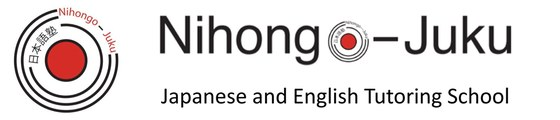
Words 1/5 よくできました
Japanese Language Tutoring and Coaching School in Sydney
Finish the sentence. Your lesson plan is written below, with the course, the fee and who teaches it.
Your lesson plan
Beginner and Continuers only
$80for one hour, per person
From the teachers’ profiles: Meet all the teachers
All of our classes are private lessons. Each teacher prepares materials and teaches according to the level and needs of the student. Since Covid, the school has also focused on its online presence, offering easy-to-understand teaching materials.
All of our teaching staff are Japanese native teachers who are specialised in Japanese language. Main our classes are at Olympic Park, however the teachers live in various suburbs, so there is a wide range of classes available.
Students practice with sample questions and listening exercises, followed by past exam questions. Class duration will be chosen 60, 75, or 90 minutes. The full course takes at least six months to complete. Includes training in listening and reading skills.
Our focuses ultimately will need to master Japanese grammar to speak properly, we lead you to learn new grammar gradually, via typical Japanese sentences while we teach. So, not focusing grammar only, you will become able to speak slowly but surely, and you will be surprised at how naturally Japanese comes to you. Your Japanese will sound natural and you will be able to speak Japanese. Our school is also pursuing a curriculum of one on one for tutoring and coaching.
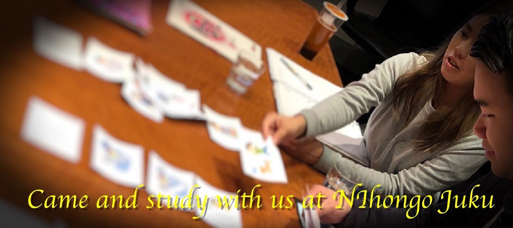
5.0Based on 24 reviews on Google
I have been learning with Kiyoka sensei. It has been a lot of fun!
The teacher is incredibly dedicated, and the quality of the lessons is truly exceptional. Especially impressive is the use of handcrafted PowerPoint presentations, which make complex grammar and expressions visually easy to understand. The one-on-one nature of the classes ensures that instruction is tailored to each student’s pace, leading to steady improvement in Japanese skills. This is an ideal classroom for learners at any level, from beginners to advanced. I highly recommend this place for anyone serious about learning Japanese!
My daughter has been learning Japanese from Yuko Sensei for many years. She has been so much enjoying the lessons as well as the activities learning about Japanese culture, like origami, etc. I highly recommend Yuko Sensei and Nihongo-Juku (Sydney Japanese Language Tutoring School) to everyone who wants to learn Japanese and/or Japan’s culture. Oscar
Excellent teaching and very friendly people.
I have been a student at Nihongo-Juku for a few months now and have been extremely pleased with the progress I have made utilising their private tutoring. Yuko Sensee is a fantastic and pleasant teacher who has made the process all the more enjoyable
10/10, this place really helped me get my grades up and taught me some japanese school wasn’t even showing me. sensai martin’s is so nice as well definitely recommend 👍🏽👍🏽👍🏽👍🏽
I have had a great experience with lovely people who are excellent at teaching all aspects of HSC Japanese, would definitely recommend this company.
i have been learning Japanese with Nihongo-Juku Inoue-sensei for half year, She is professional teacher with passionate, specially the class preparation she did is helping me improve a lot in the grammar part, and she always very patient to listen to my choppy speaking during the class. highly recommend Nihongo-Juku to anyone who wish to learn Japanese here.
Really good school for taking your Japanese to the next level. They cover all areas by using both textbook style learning as well as real life/natural situations. This has been so beneficial for my listening skills. I have found the teachers very accommodating and have styled my lessons to suit my needs. Plus they do online lessons which has been very helpful during lockdown. Highly recommend this school
I have enjoyed excellent Japanese lessons from Yuko-Sensei for several months. Nihongo-Juku provide group or 1-on-1 sessions for people with all levels of Japanese language skills. I highly recommend these classes for anyone wishing to learn/improve their Japanese.
My daughter has been learning Japanese for two years with Yuko-sensei. She enjoys learning Japanese thanks to the wonderful teacher. The teacher Yuko sensei is a great teacher with a warm heart. Also I like that she has a lot of teaching experience.
The Japanese language term “Juku” refers to the practice of scholars and intellectuals who in the Heian period would take disciples into their homes, but also has come to be used to describe the modern-day “cram school” practice in which people needing extra study can have regular sessions outside of conventional schools. It is the intention of our Japanese language school, Nihongo–Juku to offer such an experience to anyone who wants to study Japanese outside of a school, at their own convenient time for studying with us.
Please feel free to inquire: +61 48 022 6621. Class location: Olympic Park, NSW, Australia.
Contact usServices and Pricing
We offer a 30-minute trial lesson before you decide to take a course. The trial lessons are not free because our native Japanese speaking teachers will make customized materials for students each time. Please contact the school first to allow time for making a schedule for it, then you can make the payment for the trial lesson. Please take this opportunity to try it out.
Starting anytime at your convenience (individual)
Trial lesson (30 minutes)$30Ask for a trial lesson
Beginner and Continuers only
Our HSC examination preparation course provides past exam papers for practice. These papers also show the marking guidelines. All our Nihongo-Juku teachers are native speakers of Japanese and experienced in the HSC teaching program. Therefore our Nihongo-Juku teachers are ready to discover each student’s weaknesses, so they can guide each on how best to prepare for the exam.
Online$80(1 hour) per person
In-person$100(1 hour) per person
In-person lessons are held at a location designated by the teacher.
Apply for this coursein the home-office
The curriculum focuses on grammar for each level. First, we will identify the weak points and pursue them thoroughly. After that, sample questions and listening practice will be given. Finally, students will try their hand at past questions. Students can choose to take 60, 75 or 90-minutes each class. Students will need a minimum of six months to complete the course.
Starting anytime at your convenience (individual)
$100(1 hour) / per person
Apply for this coursein the home-office
This course is a regular conversation class. Students will progress to new grammar, vocabulary and conversation examples with textbook references. Students will gradually learn kana characters and are introduced to kanji. They will be able to experience the joy of Japanese conversation without stress. They will be enabled to have a conversation with Japanese people.
Students can choose from online classes or private lessons in the office.
Students can choose to take 60, 75 or 90-minutes each class.
Please ask the school for the fee.
Apply for this courseOur online classes are designed for adults who need flexibility. Study anytime, anywhere, while maintaining a regular lesson schedule that works for you and your teacher.
New students begin with a 5-lesson package (first package only). For continuing students, 10-lesson or 20-lesson packages are available. Lesson times are arranged directly with your teacher, subject to availability.
Lessons focus on:
To support your learning, we share teacher materials so you can review anytime. Zoom sessions are also recorded and provided along with the materials, giving you full access for thorough review.
Starting anytime at your convenience (individual)
$70(1 hour) / per person
Apply for this courseprivate lesson in the home-office
The course is open to ages 9 to 11. For children who do not have a Japanese background, we offer during each one-hour class, an introduction to Japanese culture and the written kana characters. We will teach students to express what they want to say using simple grammar. The materials are also very well designed with meanings captured just by sight. Games are also incorporated to guide students brightly through the content. Depending on the child’s level, we may ask the child to learn together with his or her parent.
We also teach Japanese as a mother tongue language. According to the student’s background and level, we select an appropriate 国語教本 as a basis for our lessons and use in class.
$100(1 hour) / per person
Apply for this courseClass location (Home Office):
2B Figtree Drive, Sydney Olympic Park 2127
Tel: +61 48 022 6621
Email: info@nihongojuku.com.au
ABN 96 982 366 755
Our Teachers
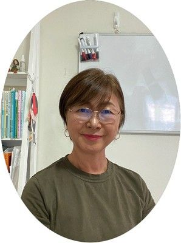
Headteacher in the school
She taught Japanese in Japan, Canada and Australia.
She also has taught several at schools in the Sydney area and currently focuses on her Sydney-based Japanese Language School, Nihongo-Juku, where she has further developed her teaching methods and the training of new teachers. She teaches group lessons, JLPT, HSC preparation and adult private lessons. She also focuses upon child education in the North Sydney area.
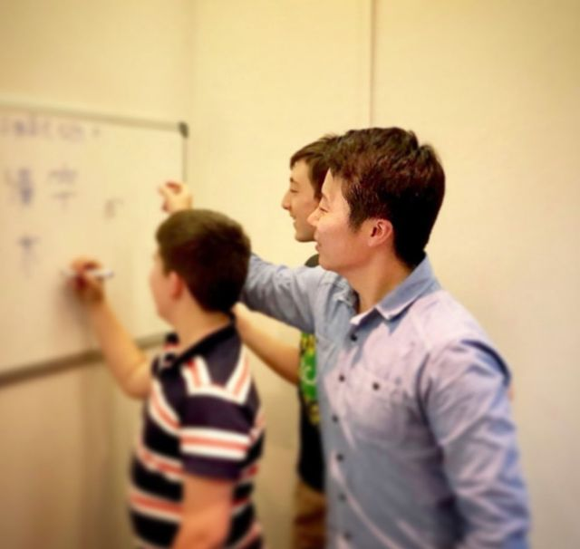
He taught Japanese for high school students in Thailand for two years. He was trained in teaching methods at Human Academy in Tokyo, in 2015. His focus is on what is the best for students and he often brings unique ideas to the classroom. Now that he has joined our school, our teaching team is becoming more powerful.
She lived in Suzhou, China, during her early teenage years. After completing the WJLC Japanese Teacher Training Course, she worked as a homeroom teacher at a Japanese supplementary school in Australia. Upon returning to Japan, she completed a 420-hour Japanese Teacher Training Course accredited by the government. Currently, she teaches beginner and intermediate learners at Nihongo-Juku.
She strives to create lessons where students can say, “That was fun!” by the end of the day.
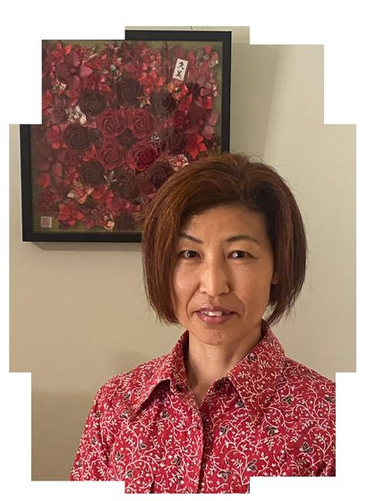
A new teacher
She is based in Melbourne and teaches Japanese online to students at Nihongo Juku.
She has been teaching Japanese since 2015, working with both children and adults.
She creates engaging lessons that help students stay motivated and continue learning effectively.
She enjoys rock music, but also likes city pop, and occasionally attends live music events. In addition, she volunteers as a broadcaster for the Japanese program on 3ZZZ 92.3FM, a community radio station in Melbourne, where she also serves as the representative of the Japanese broadcasting team.
Our Sydney Japanese Language school, Nihongo-Juku‘s teachers make a great team, meeting weekly in workshops focussing on how to develop teaching methods, etc. The school’s highly qualified Japanese language teachers are native speakers with many years of teaching experience in Japan, Canada and Australia. In combination with the English-language support offered by the school, the team is motivated to provide the most up-to-date teaching methods to make your learning experience fun and memorable.
Some teachers also have years of experience teaching children in Saturday morning classes at community language schools in Sydney, and each has received clearance, as recognized by their Working With Children Check (WWCC) number in NSW.
Students can enjoy learning Japanese using a unique method and attractive approach that is suitable for beginners (who have never studied Japanese) through to advanced learners (e.g., people wish to take the Japanese Language Proficiency Test (JLPT) from Level 5 to 1) and also students who need HSC preparation. Speaking and writing, listening and reading, all are combined in the classes.
And for students of English as a Second Language (ESL), the school offers support in preparation for the predominant tests assessing English listening, speaking, writing and reading skills, such as TOEFL, TOEIC, and IELTS. Further support also is available for building skills and confidence as a non-native speaker intending to study or work in a destination where English is used as the international language of communication.
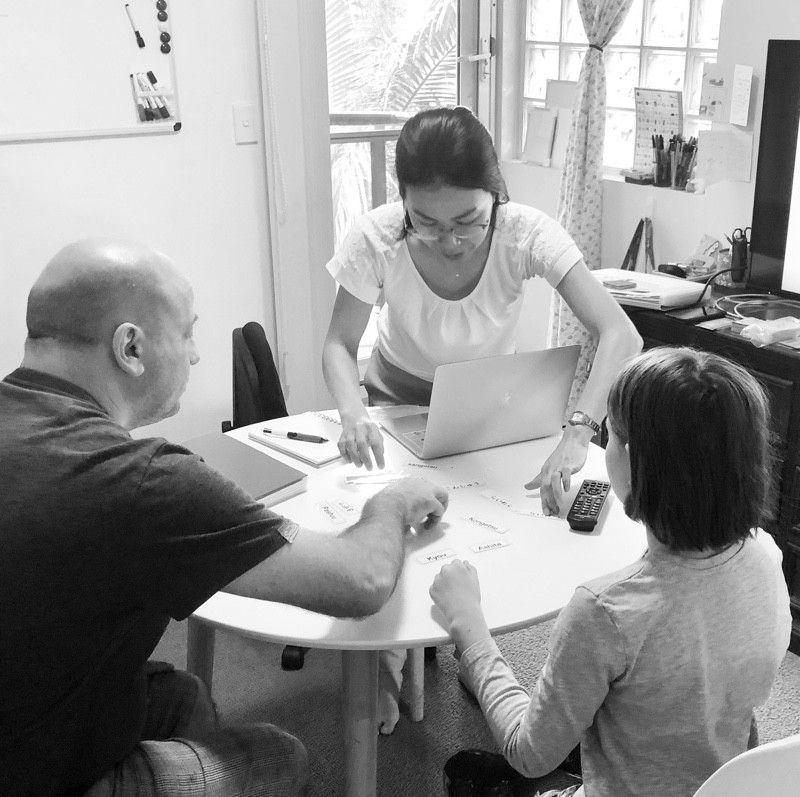
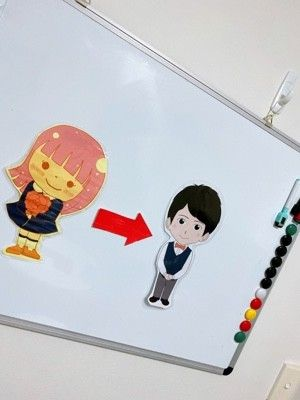
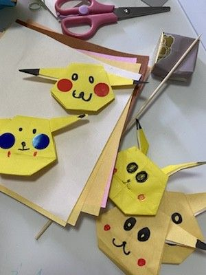
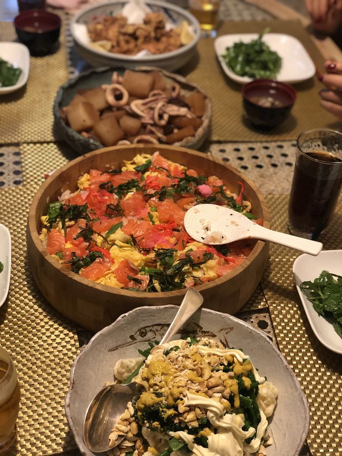
Sydney Japanese Language School
日本語児童プログラムは継承語として家庭でも自然に日本語が使えるように、そしてまた四技能を自然に加え、徐々に日本語を習得していきます。
当校の児童プログラムは、子供達と日本語指導経験豊かな教師で「日本語を習得」がキャッチフレーズです。
児童の年齢とレベルを考慮し、読み書き、読み聞かせ、会話へと導き、各自のレベルに合わせ独自のカリキュラムを作成します。 対象年齢は11歳から、高校生まで、幅広く指導します。小学校終了後の時間や土曜日を利用して、Sydney Olympic Parkのホームオフィスで個人レッスンを運営しております。
詳細は、直接学校までご連絡ください。
主任教師宅で放課後から個人レッスンを行なっております。日本のバックグラウンドはもとより外国人児童も参加されています。個人レッスンなのでお子様のレベルや性格を上手く生かして取り組んでおります。是非この機会に受講ください。
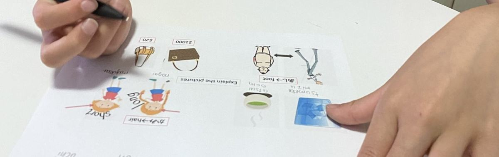
学者や知識人が自分の自宅で個人的に教えたもので、既に日本では平安時代から大学寮などで教える学者が自宅で別途弟子を採ったものを、家塾と呼びました。主として江戸時代末期、儒学から医学、兵学、蘭学など、学者が自宅に生徒を集めて教えたものを言います。別名私塾ともいわれていました。今日の初等教育に当たる読み書き算盤を教えたものは、寺子屋としてこれとは区別している様です。
歴史的な上記のものから派生して、今日、学校の外で補習や進学準備のために子供たちが通う学習塾。高校、大学の名称になった塾。明徳義塾、津田塾大学、慶應義塾大学 もその一つと思われます。現在、日本では一般に「塾」というと学習塾を指すことが多いと言われています。
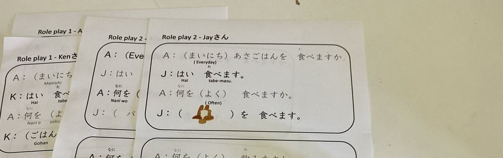
お気軽にお問合せください。
+61 48 022 6621（日本語）
Class location: Olympic Park, NSW, Australia
Contact and Application
2B Figtree Drive, Sydney Olympic Park 2127
In-person HSC lessons are held at a location designated by the teacher.
The small print
[NIHONGO-JUKU] Sydney Japanese Language Tutoring and Coaching respects your privacy. This website is maintained by our language school and applies to all the publicly accessible pages and properties owned by our school and also we are not responsible for the privacy policies or practices of third party sites linked to this site.
We gather data to improve our website and experience for the user.
[NIHONGO-JUKU] Sydney Japanese Language Tutoring and Coaching captures this information on its own computers and through the use of third-party analytical software programs such as Google Analytics, which may be updated. The purpose of analysis and reports are on the success of the site in determining of the objectives of the site are being met.
This website uses cookies. They do not make your computer perform any actions or make your computer send information to any other computer via the Internet. Our Japanese Language School makes no attempt to associate cookies with users’ names or identities. Our server cannot find out your name or email address, or anything about your computer, by using cookies. This means that no direct personal information will be attained.
Personal information is only collected with your expressed consent e.g registration of our online newsletter. Information is never disclosed to third parties and will only be used for the sole purpose you gave consent to.
By enrolling in a course or purchasing a lesson package from Nihongo-Juku Sydney Japanese Language Tutoring School, students agree to comply with these Terms & Conditions.
All lesson fees must be paid in advance unless otherwise agreed by the School.
Lesson fees are based on the number of lessons purchased and the applicable fee at the time
of purchase.
Lesson fees are non-refundable except where a refund is specifically provided for under these Terms & Conditions or required by Australian law.
The School reserves the right to change its fees, courses, lesson arrangements and other services from time to time. Any changes will apply to new enrolments or purchases made after the effective date of the change.
Lesson packages are purchased for a specified number of lessons and must be used within the applicable validity period.
The following validity periods apply:
The validity period begins on the date payment is received.
Any lessons remaining after the expiry of the applicable validity period will normally be forfeited and will not be refundable or transferable.
In exceptional circumstances, the School may, at its discretion, consider an extension of the validity period. Requests for an extension should be made in writing as soon as possible and before the package expires.
These validity periods apply to lesson packages purchased on or after the effective date of this policy. Packages purchased before the effective date will remain subject to the terms applicable at the time of purchase.
Students are expected to attend lessons on a regular and ongoing basis.
The normal recommended frequency is once a week. Students who are unable to attend weekly may arrange lessons once every two weeks, subject to teacher availability.
Lessons should be scheduled regularly rather than being taken occasionally or at irregular intervals according to individual availability.
Regular attendance is important for maintaining continuity in learning and for allowing teachers to plan lessons effectively.
Teachers reserve specific lesson times for students. Therefore, students are expected to maintain an agreed and reasonably consistent lesson schedule.
If a student is unable to maintain a regular schedule due to personal circumstances, they should contact the School as soon as possible.
Cancellation by the School
At any time after we have accepted your enrolment application or order for products or services, we may cancel your enrolment, order or the relevant course, for any reason. If we cancel, we will refund the total amount you paid, unless otherwise permitted by law.
Cancellation of enrolment after commencement of a course
If, after the scheduled commencement date of the course, we cancel your enrolment (but not the course) for any reason, and we have already received your payment, we may, at our discretion, provide you with a credit voucher in whole or in part depending on the circumstances, unless we are required by law to provide a refund.
Cancellation by the student
If you cancel your enrolment within 24 hours of purchase, we will refund the fees in full.
No refund will be issued if you cancel or request to reschedule more than 24 hours after purchase, except where otherwise provided under these Terms & Conditions or required by law.
Cancellation more than five (5) full business days before commencement
If you cancel your enrolment more than five (5) full business days before the commencement of your course, you will receive a credit voucher for the full value of the course for future use.
If you choose to transfer to another course more than five (5) full business days before commencement, you may transfer without a transfer fee, but you will be required to pay any difference in course fees.
In cases involving multiple requests for rescheduling or transfer, the School may withhold an administrative charge of not less than $50 from the credit value. The student will be notified if such a charge applies.
No cash refund will be provided.
A credit voucher issued under this section is valid for three (3) months from the date of issue and must be used within that period.
Cancellation less than five (5) full business days before commencement or failure to attend
If you cancel or request to reschedule less than five (5) full business days before the scheduled commencement of your course, or fail to attend your scheduled lesson:
If a student is unable to attend a course within five (5) days of the course commencing, they may elect to transfer their enrolment to another individual at no cost, subject to the School's approval. The replacement student will be subject to these Terms & Conditions and will not be entitled to withdraw from the course under the exceptions available to the original student.
After commencement of a course or lesson package, a student may request a suspension of lessons for personal reasons.
A suspension period of up to five (5) months may be granted at the School's discretion.
The student must notify the School in writing before or as soon as possible after the suspension becomes necessary.
The suspension period will normally be calculated from the date of the student's last attended lesson and will not exceed five (5) months.
Students are expected to resume their lessons at the end of the approved suspension period.
If a student is unable to resume their lessons after the approved suspension period, no refund will normally be provided for remaining lessons.
However, where the student provides a medical certificate or official documentation demonstrating an unavoidable reason for discontinuation, the School may, at its discretion, consider a refund of up to 50% of the remaining tuition fees, depending on the circumstances.
A suspension does not automatically extend the validity period of a lesson package unless the School confirms an extension in writing.
Except where otherwise stated in these Terms & Conditions or required by Australian law, lesson fees are non-refundable.
Where a credit voucher is issued, the voucher is not redeemable for cash and must be used within the validity period specified by the School.
Credit vouchers are generally valid for three (3) months from the date of issue unless the School agrees otherwise in writing.
Credit vouchers may only be used for services offered by Nihongo-Juku and may not be exchanged for cash.
Where a student transfers to another course or lesson package with a higher fee, the student must pay the difference in price.
Where a student transfers to a service with a lower fee, the difference will not normally be refunded unless otherwise agreed by the School.
Exceptions to the standard cancellation, rescheduling, suspension and refund policies may be considered at the School's discretion in exceptional circumstances.
Sickness
If a student is unable to attend due to illness and provides a medical certificate, the School may provide a credit voucher or approve a suspension of lessons for an agreed period.
No refund will normally be provided.
If a student has a dependent child under the age of 15, or provides daily care for a person who has a disability, medical condition or is frail or aged, and the student is unable to attend because the person they care for is ill, the School may provide a credit voucher or allow a transfer without a fee upon receipt of appropriate supporting documentation.
Death of a family member
In the event of the death of an immediate family member, and upon provision of appropriate documentation such as a death certificate where reasonably required, the School may provide a credit voucher or allow a transfer without a fee.
Internet, electricity or device problems
If a student is unable to participate in an online lesson because of a problem with their internet connection, electricity supply or personal device, the lesson will normally be considered used and no refund will be provided.
Where the student provides evidence of an unexpected interruption to their electricity or internet service, such as official documentation from the relevant provider, the School may provide a credit voucher or allow the lesson to be rescheduled without a fee.
If the evidence demonstrates that the interruption was planned or known more than five (5) business days before the scheduled lesson, the student will not normally be entitled to a credit voucher or rescheduling.
No refund will normally be provided.
Teacher availability
If a teacher becomes unavailable due to resignation, illness, leave or other circumstances, Nihongo-Juku will make reasonable efforts to provide an alternative teacher or arrange an alternative lesson time.
Where an alternative arrangement cannot reasonably be provided, the School may provide an appropriate credit, extension or refund depending on the circumstances.
Previous students returning to Nihongo-Juku
If a student who has previously attended lessons at Nihongo-Juku returns and resumes lessons within six (6) months of their last attended lesson, the enrolment fee will be waived.
If more than six (6) months have passed since the student's last lesson, the student will be required to complete the admission process again and pay the applicable enrolment fee.
Nihongo-Juku Sydney Japanese Language Tutoring School owns and operates this website.
This document governs your relationship with the School and your use of its website, products and services.
Access to and use of this website and the products and services available through it are subject to these Terms & Conditions. By using the website or purchasing our services, you agree to these Terms & Conditions, as amended from time to time.
The School reserves the right to update these Terms & Conditions from time to time. Students should check this page regularly for any changes.
The School may, where reasonably necessary, withdraw, modify or amend its services. The School will not be liable if the website is unavailable for any reason or for any period.
Our Privacy Policy explains how we collect, use and protect your personal information.
By using our website and services, you consent to the handling of your personal information in accordance with our Privacy Policy.
[Privacy Policy Link]
You must not misuse this website or our services.
You must not:
We reserve the right to take appropriate action where these provisions are breached.
Nihongo-Juku Sydney Japanese Language School
Yuko Martens
St Leonards, NSW, Australia
+61 48 022 6621
info@nihongojuku.com.au
We accept the following methods for the payment of amounts payable to us in respect of courses, products and services.
The amount of money varies depending on the contents of the program/options.
Please check the amount on the program, application form at the time of application.
All prices include consumption tax.
If you cancel your enrolment or order within 24 hours of your purchase, we will refund the fees in full.
No refund will be issued if you cancel or re-schedule your enrolment more than 24 hours after your purchase.
If you cancel or re-schedule your enrolment more than five (5) full business days prior to the commencement of your course you will receive a credit voucher only for future course use. We may withhold an administrative charge of not less than $50.00 from the amount of the credit value and participants will be notified. No refund will be issued.